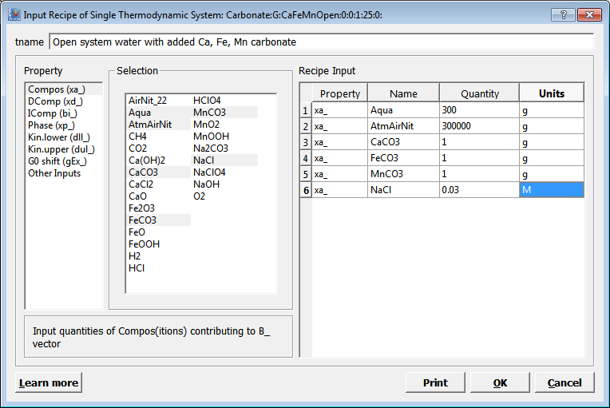
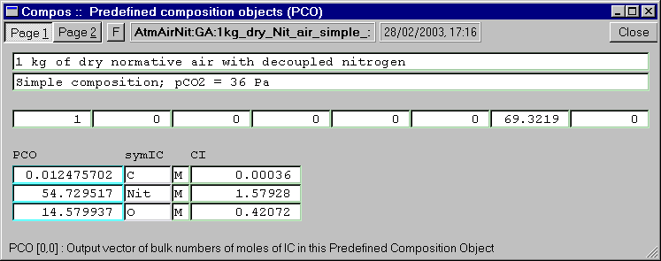
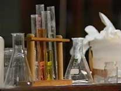
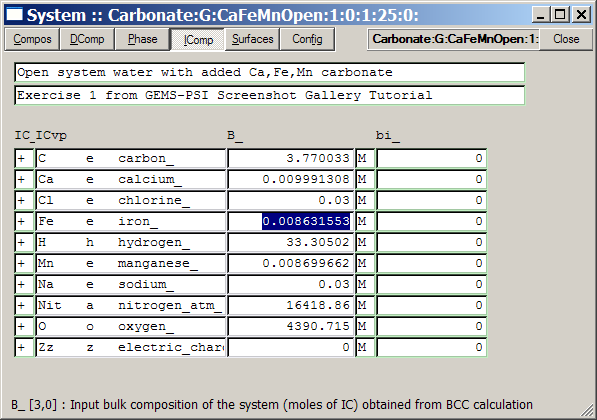
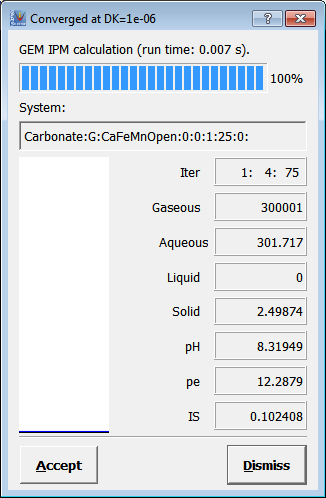

Previous Page Back to Start Page
(9)
The "System" module window (shown below) serves for a detailed setup of
the model chemical system.
The "Compos" page, where you get after clicking on
the
"Bulk
Composition"  toolbar button on "Single Thermodynamic
System" dialog, offers you an easiest way to express your "recipe"
to be "cooked" in the chemical equilibrium "kitchen".
toolbar button on "Single Thermodynamic
System" dialog, offers you an easiest way to express your "recipe"
to be "cooked" in the chemical equilibrium "kitchen".

The CCvp
list on the "Compos" page
contains keys of all PCO records in your project database (see below
about PCO).
The xa_
vector, shown above, contains
the following recipe: 300 g of water; 300 kg of dry air; 1 g CaCO3;
1 g FeCO3;
1
g MnCO3; and 0.03 mol NaCl. Codes to the left of xa_
vector ("g" or "M") define
units of measurement in which numbers in the xa_
vector will be taken to add
the respective PCO to total bulk composition of the system. If you work
with GEMS in parallel, enter this recipe into the Compos page.
(10) "PCO" stands for
"Predefined Composition Object" - a record that contains elemental
stoichiometry
of a commonly used ingredient, such as water, air, acid, base, mineral
solid, or even rock or sediment, to put into the "equilibration
pot".
Some PCO "Compos" records are provided in the GEMS-PSI default
database;
of course, you can create in your project database as many your own PCO
records
as you wish. A
Compos
window dispalying the "AtmAirNit" PCO (you can get it by marking the
PCO name in the list and pressing F7) is shown below.

Note that in the screenshot above, the resulting PCO stoichiometry is normalized to 1 kg mass, so that adding "1 mol" of this PCO is equivalent to adding 1 kg of "normative air with decoupled nitrogen". Vice versa, adding 2 g of this predefined composition will add 1/500 of the above stoichiometry (i.e., 0.000024951 mol of C, 0.109459034 mol of Nit and 0.029159874 mol of O) to bulk composition of the system.
(11) Now, imagine your
model
system as a pot where you put all necessary ingredients, close it,
shake,
and keep at temperature T and pressure P of
interest
long enough to get the "stew" equilibrate into a new phase assemblage.
 >
Recipe > >
Equilibrium speciation
This is pretty similar
to
what happens in nature, what chemists do practically, and what the GEM
IPM
algorithm does mathematically. The GEMS code actually does it
in
two steps.
It sums input quantities of all ingredient stoichiometries up into a single vector b of total elemental bulk composition of the system (i.e. into an elemental "formula" of the whole system).
The GEM IPM module splits the b vector into moles of phases Xa and their species x present at equilibrium state.
The first step is done
(without running IPM) when you click upon a "Calculate bulk
composition"  toolbar button on the "Single Thermodynamic System"
dialog. You can check the result in the "IComp" page of "System" module
window, as shown below (vector B_):
toolbar button on the "Single Thermodynamic System"
dialog. You can check the result in the "IComp" page of "System" module
window, as shown below (vector B_):

After this BCC (Bulk Composition Calculation) operation, all
ingredients
(in our case, PCO additions) are already mixed into a single "brew"
(vector
B_).
(12)
To equilibrate this "brew in the pot" (i.e. to perform the second
step),
switch again to "Single Thermodynamic System"
dialog
and click on a "Calculate equilibrium"  toolbar button.
This will start the GEM IPM module, which displays an IPM Progress
Dialog when it runs:
toolbar button.
This will start the GEM IPM module, which displays an IPM Progress
Dialog when it runs:

In a second or less, the IPM Progress Dialog will indicate that the
IPM-2
module has converged. Press on the "Accept" button to save the (now
complete)
SysEq record into your project database.
Congratulations!
Now, you can examine your first GEMS-calculated equilibrium
(proceed to the next page of this screenshot tutorial).